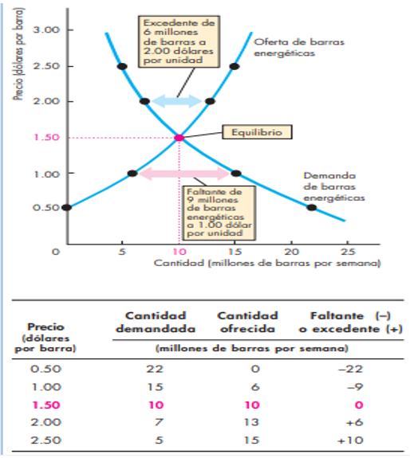

El propósito de una teoría es predecir y explicar. Una teoría es una hipótesis que se ha comprobado satisfactoriamente. Una hipótesis no se comprueba por el realismo de sus supuestos, sino por su capacidad para predecir con exactitud y explicar, esto aplica tanto a la teoría del consumidor como la teoría del productor.
En microeconomía, la producción es simplemente la conversión de factores productivos en productos y una empresa es cualquier organización que se dedica a la planificación, coordinación y supervisión de la producción. La empresa es el agente de decisión que elige entre las combinaciones factores-producto de que dispone, aquella que maximiza su beneficio: esta es la idea central de la teoría del productor. El problema comparte similitudes con el del consumidor. En el caso del consumidor, la microeconomía lo reduce a menudo a la cuestión de maximizar una función de utilidad con una restricción presupuestaria. En el caso de la producción, se trata de maximizar la función de beneficios teniendo en cuenta las restricciones tecnológicas.
Una herramienta fundamental para comprender el comportamiento del consumidor y el productor es el modelo de oferta y demanda, ya que nos ayuda a responder las grandes cuestiones económicas: ¿qué?, ¿cómo y para quién se producen los bienes y servicios?
También, podemos conocer aspectos más particulares de la economía como: ¿Qué hace que los precios del petróleo y la gasolina se dupliquen tan solo en un año? ¿Seguirán estos precios al alza? ¿Se aprovechan las empresas petroleras de la gente?
La explicación que se le proporciona en este recurso le ayudará a responder este tipo de preguntas y muchas otras que surgen en el ámbito de las empresas y de los proyectos.
Para comenzar recordemos las características de un mercado competitivo:
Figura 1. Costo de oportunidad
Oferta y demanda
Demanda
Figura 2. Curva de Demanda
Oferta
Figura 3. Curva de Oferta
Equilibrio del mercado
Figura 4. Equilibrio
Figura 5. Los efectos de todos los posibles cambios en la demanda y la oferta
Figura 5. Los efectos de todos los posibles cambios en la demanda y la oferta
La elasticidad es un concepto económico introducido por el economista inglés Alfred Marshall, procedente de la física, para cuantificar la variación (que puede ser positiva o negativa) experimentada por una variable al cambiar otra. Para entender el concepto económico de la elasticidad debemos partir de la existencia de dos variables, entre las que existe una cierta dependencia, por ejemplo, el número de automóviles vendidos y el precio de los automóviles, en este ejemplo, la elasticidad mide la sensibilidad de la cantidad de automóviles vendidos ante la variación del precio de los mismos. Pasemos a estudiar diferentes usos de este concepto en microeconomía.
Figura 6. Calculando la elasticidad de la demanda
Más elasticidades de la demanda
Figura 7. Demanda elástica, inelástica y unitaria
Figura 7. Demanda elástica, inelástica y unitaria
¡Ponga en práctica lo aprendido!
Se encuentra en los ejercicios de la actividad 02
Universidad Nacional Autónoma de Honduras
Vicerrectoría Académica
Dirección del Sistema de Estudios de Posgrados
Dirección de Innovación Educativa
Entidad Desarrolladora del curso de “Economía”
Dr. Armando Euceda
Director DSEP
Dra. Martha Leticia Quintanilla
Directora DIE
MSc Soria Ramos
Expertos en contenidos
DSEP
Diseñador Instruccional
Ruth Gámez
Corrección de Estilo
Karina Carías
Producción Digital
Carlos José Pérez Sánchez
Programador Web